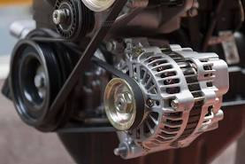
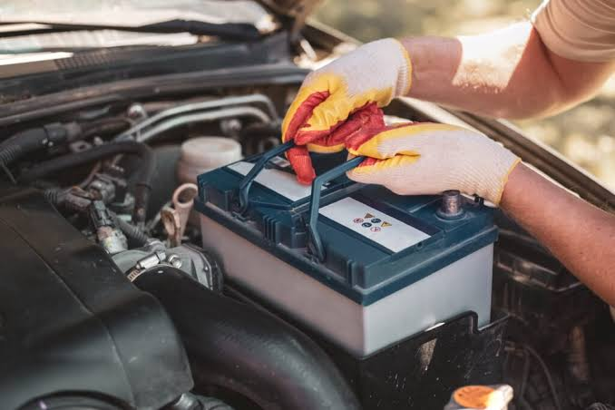
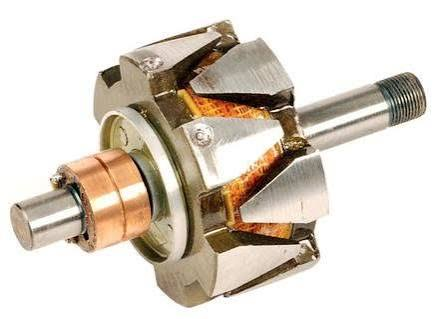
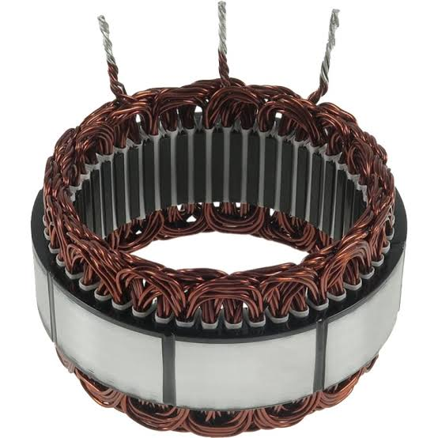
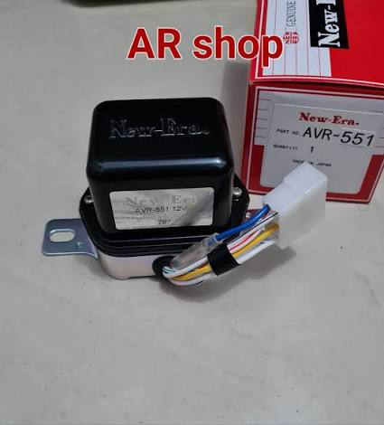
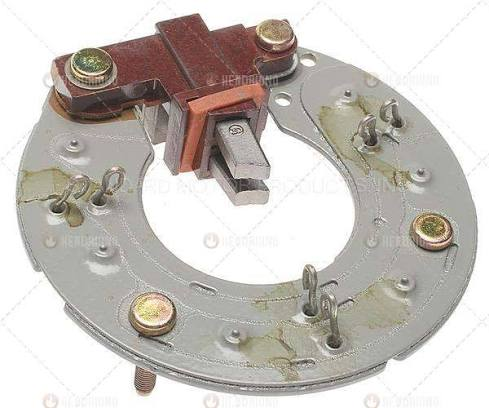
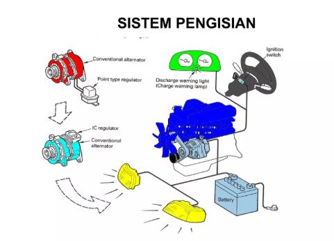

Tujuan Pembelajaran
- Menjelaskan prinsip kerja sistem pengisian konvensional mobil.
- Mengidentifikasi komponen utama alternator, regulator, baterai, dan indikator pengisian.
- Menjelaskan alur energi listrik dan melakukan pemeriksaan dasar sistem pengisian.
Menu Pembelajaran
📘 MateriPrinsip kerja dan komponen sistem pengisian.
🔌 RangkaianDiagram sistem dan fungsi komponen.
🎬 VideoVideo cara kerja sistem pengisian.
📝 LKPDTugas praktik pemeriksaan sistem pengisian.
📋 Pre TestGoogle Form sebelum pembelajaran.
🎯 Quiz WaygroundKuis interaktif dengan kode yang dapat diubah.
✅ Post TestGoogle Form setelah pembelajaran.
Materi Sistem Pengisian Konvensional
AlternatorMengubah energi mekanik menjadi energi listrik.

BateraiMenyimpan energi dan membantu menyuplai beban.

Rotor & StatorBagian pembangkit medan magnet dan tegangan induksi.


Regulator & RectifierMengontrol tegangan dan menyearahkan AC menjadi DC.



Gambar Prinsip Kerja

🎬 Video Cara Kerja Sistem Pengisian
Gunakan tombol ⛶ pada pemutar untuk layar penuh.
LKPD Praktik
- Identifikasi komponen sistem pengisian.
- Periksa kondisi baterai dan terminal.
- Ukur tegangan baterai sebelum mesin hidup.
- Hidupkan mesin dan ukur tegangan pengisian.
- Amati lampu indikator pengisian.
- Catat hasil dan buat kesimpulan kondisi sistem.
| Parameter | Hasil | Kesimpulan |
|---|---|---|
| Tegangan baterai awal | ||
| Tegangan pengisian | ||
| Lampu indikator |
📋 Pre Test
Kerjakan sebelum memulai pembelajaran.
Buka Pre Test Google FormLink Pre Test: https://forms.gle/6Md1gRYmxmRPjbEk6
🎯 Quiz Wayground
Gunakan kode yang tertera untuk bergabung ke kuis.
QR akan diperbarui saat kode disimpan.
Kode dapat diubah dan disimpan pada perangkat ini.
✅ Post Test
Kerjakan setelah menyelesaikan materi dan praktik.
Buka Post Test Google FormLink Post Test: https://forms.gle/qbstbrHrMUv3u65w6